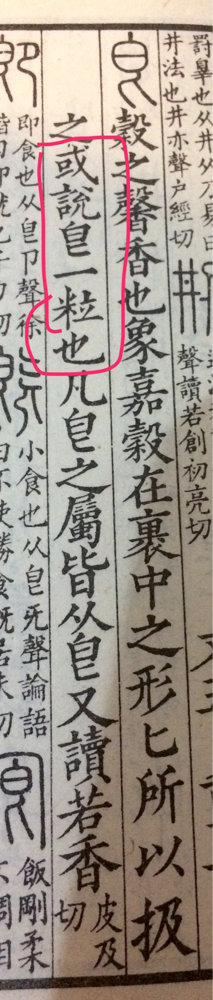

正文:
吾在益州，與數人同坐，初晴日晃，見地上小光，問左右：“此是何物？”有一蜀豎就視，答云：“是豆逼耳。”相顧愕然，不知所謂。命取將來，乃小豆也。窮訪蜀土，呼粒爲逼，時莫之解。吾云：“三蒼、説文，此字白下爲匕，皆訓粒，通俗文音方力反。”衆皆歡悟。
以上出自《颜氏家训·勉学》。说颜之推在四川的时候，看见远远一个东西，问是什么，四川人回答，这是豆逼。颜之推左右的人完全不懂，说你告诉我豆逼长这个样子？颜之推让人把那玩意取来，发现是个豆子。颜之推想了想说四川人所谓豆逼，其实就是中原人所谓豆粒。大家欢乐地学到了新知识。
——毁人不倦的分割线——
颜之推的三言两语，如何论述了豆逼=豆粒呢？这里翻译解释一下。
颜之推在翻字书《三苍》、《说文解字》的时候看到有“皀”这个字，李斯、许慎他们都说这个字是“粒”的意思。
《三苍》大约是秦汉的，咱们今天是看不到了，不过东汉许慎作的《说文》咱们还是能看到的。

皀这个字其实是今天“即”的左半边，在《说文解字》中本身的确是有粒的意思…颜之推的记性真好…
那么豆粒和豆皀是一个意思，又怎么变成了豆逼呢？
原来颜之推又读过一本书叫做《通俗文》，这本书是东汉经学家服虔写的，大概是解释一些方言俗语的意思，现在亡佚了。这本书里面提到了“皀”，说它的读音是“方力反”，也就是它的读音是“方”的声母和“力”的韵母组合而成的，也就是和“逼”一个读音。
因此，豆粒，变成了豆皀，变成了豆逼。
那么，为什么“方”+“力”不读“fi4”，而读“逼”？
这事儿要说清楚得到过年了。用最浅显的话来说，我们上古没有“f”这个声母（来自学术男神钱大昕的考证，想到这个我情不自禁跪了下来），方不读fang，它的声母应该是“帮”，和“逼”以及作为“粒”的“皀”声母是完全一样的。
而“力”呢，古代并不是去声（4声），逼和皀在古代也不是阴平（1声），他们都属于今天普通话中不存在的入声，韵母都是“职”，是完全一样的。
所以皀虽然是“方”的声母+“力”的韵母，却不读“fi4”，而读“逼”。
最后一个问题，四川人怎么就这么非主流，要把豆粒说成豆皀，以至于被中原人听成了豆逼呢？
其实没毛病。服虔既然在通俗文中记载了“皀”，秦汉的字书《三苍》《说文》也有，则汉代时这个字是存在甚至流行的。可是颜之推已经是六朝后期的人了，三百年间，中原语音词汇发生了很多变化，人们已经不知道“皀”这个字了。然而，四川地处偏远，特别交通阻隔，语言变化缓慢，所以保留了古字古音。今天我们有时觉得广东话更接近古音，其实也是这一地区在历史上较远离政治中心，交通不便，语音变化缓慢的缘故。
所以颜之推真是大学者，解释一个豆逼，涉及到了音韵学、文字学等等问题，在下水平有限，仅就颜之推的原话解释到最浅显的层面。
简而言之，六朝四川人所说的豆逼就是秦汉人所说的豆皀，即六朝中原人所说的豆粒是也。
——————下课——————
话说，我重新看上面的答案，觉得两条分割线之间更像梗一些…
如果理解了这个梗，可以再进一步发展出两个新梗：
1.豆瓣是一种由豆粒发酵而成的调料
2.借用我朋友在我讨论这个字的朋友圈状态下的回复